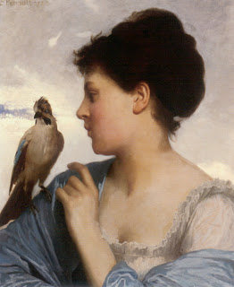

Zevachim 111 - Sacrificing Birds Outside the Temple
If one performed proper killing ( melikah , when its head is severed from the nape ) of the bird , and he did it in the Temple, and then offered that bird outside, he is liable, because with melikah the bird becomes fit for the Altar. However, if he performed melikah outside, he is not liable either for that, or for bringing it up. Melikah way of killing outside the Temple is not proper, and it makes the bird unfit for consumption and invalid as a sacrifice.
If he performed regular kosher slaughter of the bird with a knife and offered it up - he is, contrary to the expectations, liable, because of an additional phrase " or who will slaughter ."
We thus find that what makes the bird a valid sacrifice (melikah) inside makes one not liable if done outside, and what makes one liable (shechitah, or kosher slaughter) outside makes one not liable if done inside.
Art: Perrault Leon Jean Basile - The Bird Charmer 1873